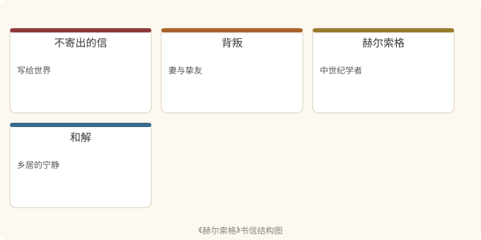

赫尔索格
一、基本信息
| 作者 | 索尔·贝娄 |
|---|---|
| 成书/出版 | 1964年出版（通说待核；作者页 B298 口径：major_works 载'赫尔索格、洪堡的礼物'——Herzog, Humboldt's Gift） Saul Bellow — Encyclopaedia Britannica（百科全书） |
| 国别/地区 | 美国 |
| 时代 | 现当代 · 20世纪 |
| 体裁 | 长篇小说 |
| 语言 | 英语 |

《赫尔索格》书信结构图（主题·结构图）
二、创作背景
作者页（B298）：贝娄 major_works 载'赫尔索格、洪堡的礼物'（B298 作者页定位，详见 aojimaqi 条核对）。
作者（B298）：1976诺奖——'for the human understanding and subtle analysis of contemporary culture'；'cultural sophistication and the wisdom of the streets'。
题材（通说待核）：中世纪学者摩西·赫尔索格遭双重背叛（妻与挚友）后狂写'不寄出的信'。
三、内容脉络
给尼采、艾森豪威尔等人的'不寄出的信'——思想史的清算（通说待核）。
四、主要人物表
| 人物 | 身份 | 说明 |
|---|---|---|
| 摩西·赫尔索格 | 学者 | （通说待核） |
| 瓦伦丁·格斯贝奇 | 挚友 | （通说待核） |
五、主题与艺术特点
- 书信体的清算（通说待核）。
- 知识分子在60年代的失位（通说）。
- '心'与'脑'的和解（通说待核）。
六、影响与评论
- 作者页：贝娄代表作谱系（B298 作者页口径）。
Saul Bellow — Encyclopaedia Britannica（百科全书） - 作者页：1976诺奖——'human understanding and subtle analysis'（B298 作者级）。
Saul Bellow — Encyclopaedia Britannica（百科全书）
七、阅读建议
难点
- 书信体与意识的交错。
- 60年代思想史背景。
- 《赫尔索格》（人民文学出版社/上海译文版本，通说待核）。
- 英文原版。
先《奥吉·玛琪》后本作。
八、待核实
- 1964年出版（Viking说）核对。
- 摩西·赫尔索格/格斯贝奇人名核对。
- '不寄出的信'情节细节待核。
本页主要来源
索尔·贝娄的其他收录作品：奥吉·玛琪历险记